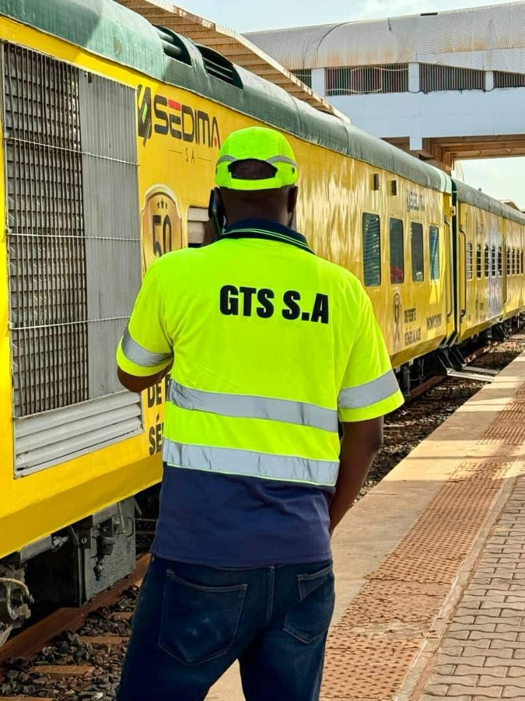

Transporteur ferroviaire national — Voyageurs & Fret
Remettre le Sénégal sur les rails.
GTS-S.A. exploite le transport ferroviaire de voyageurs et de fret ainsi que les opérations logistiques associées, au service du désenclavement et de la croissance économique du Sénégal.
Le plaisir de voyager en toute sécurité !

Ce que nous faisons
Trois métiers, une même exigence
De la gare à l'entrepôt, GTS-S.A. couvre l'ensemble de la chaîne de transport ferroviaire.
01
Transport de voyageurs
Desserte interurbaine reliant Dakar aux principales villes du pays, avec abris voyageurs modernisés et billettique renouvelée.
02
Transport de fret
Acheminement de marchandises par voie ferrée pour accompagner la croissance des activités économiques et industrielles.
03
Opérations logistiques
Coordination des flux, plateformes logistiques et partenariats techniques pour fiabiliser l'ensemble de la chaîne.